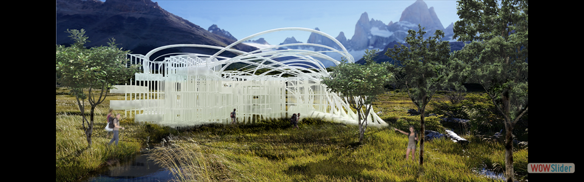

First class Adobe Photoshop experimentation
First class Adobe Photoshop experimentation  Based on template. Edited via Adobe Illustrator.
Based on template. Edited via Adobe Illustrator. Based on template. Created via Rhinoceros.
Based on template. Created via Rhinoceros.") Based on Le Corbusier's 1914 Domino House concept. Created via Rhinoceros
Based on Le Corbusier's 1914 Domino House concept. Created via Rhinoceros")
- Model made in Rhinoceros. Rendering and editing made via Adobe Photoshop.
 Based on Analog Media study of Knee Residence. Created via Adobe Photoshop.
Based on Analog Media study of Knee Residence. Created via Adobe Photoshop.
 1
1 2
2 3
3 4
4 5
5 6
6bootstrap slider by WOWSlider.com v8.7